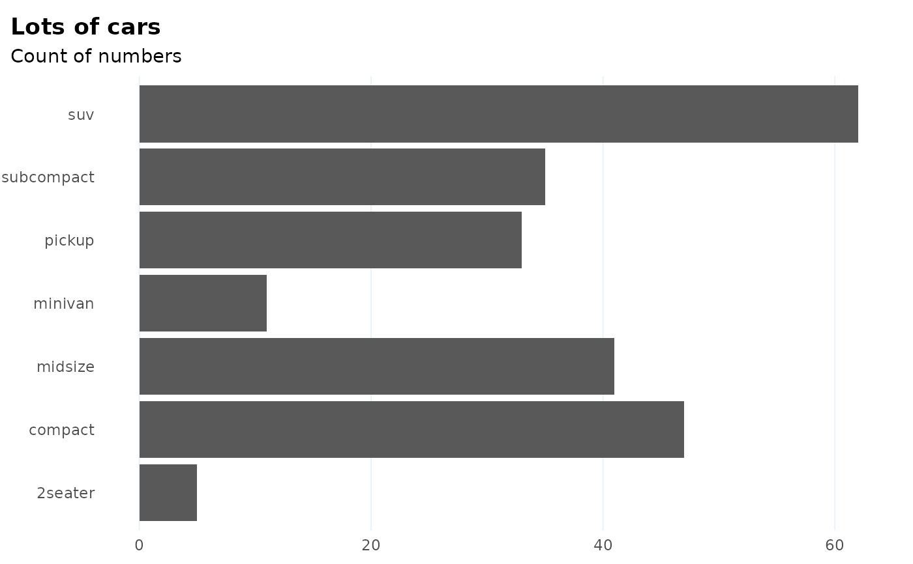
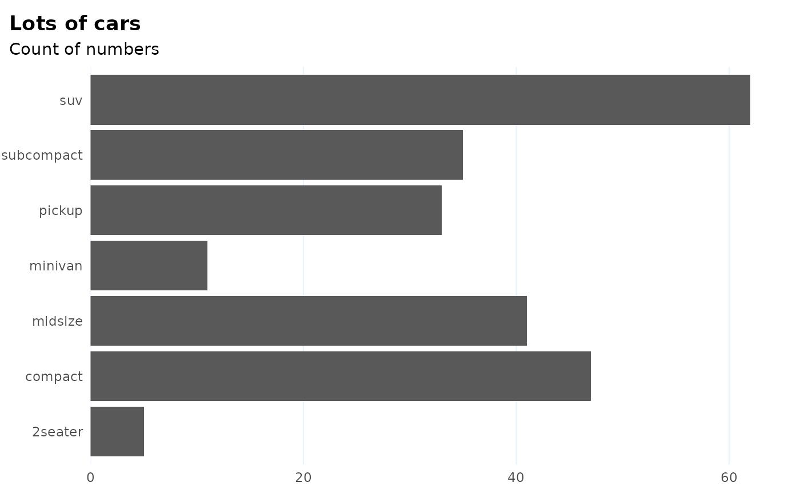

A wrapper around `theme()` which provides several shortcuts to setting common options and several defaults. See more in Details.
theme_ptrr( gridlines = c("y", "x", "both", "scatter", "none"), base_size = 11, family = "IBM Plex Sans Condensed", title_family = "IBM Plex Sans", multiplot = FALSE, tonecol = ptclr_l, margin_side = 6, margin_bottom = 6, plot.title.position = "plot", axis_titles = FALSE, richtext = FALSE, ... )
Arguments
| gridlines | Whether to display major gridlines along `"y"` (the default), `"x"`, `"both"` or draw a `"scatter"`, which has both gridlines and inverted colours. |
|---|---|
| base_size | Numeric text size in pts, affects all text in plot. Defaults to 11. |
| family, title_family | font family to use for the (title of the) plot. Defaults to `"IBM Plex Sans"` for title and `"IBM Plex Sans Condensed"` for plot. |
| multiplot | if set to TRUE, provides better styling for small multiples created using `facet_*`. |
| margin_side, margin_bottom | size of left and right / bottom margin around plot, in pts. Defaults to 6. Set to 0 to align flush with text in a Word document. |
| plot.title.position | where to align the title. Either "plot" (the default, difference from `theme()` default) or `"panel"`. |
| ... | Other parameters to be passed to `theme()`. |
| axis.title | same as in theme(), but with a default of `element_blank()`. |
Value
a ggtheme object
Details
In particular, the theme: - displays only major gridlines, allowing you to quickly switch which ones; gridlines are thinner, panel has white background - provides quick option to draw a scatter with grey background - switches defaults for title alignment - turns axis labels off by default: in practice, x axes are often obvious and y axes are better documented in a subtitle - sets backgrounds to a ptrr-style shade - sets plot title in bold and 120
All the changed defaults can be overriden by another call to `theme()`.
Note
The default fonts - IBM Plex Sans and IBM Plex Sans Condensed - are contained in this package and can be registered with the system using `import_fonts()`. You should then install them onto your system like any font, using files in the directories described in the `import_fonts()` messsage. You can also set the `ptrr.loadfonts` option to TRUE for the fonts to be registered at package load.
See also
Other Making charts:
flush_axis
Examples
library(ggplot2) # NB when `theme_ptrr()` is used in these examples, fonts # are set to 'sans' to pass checks on computers without the # sans included. If you have these fonts (see Note) you can # leave these parameters at their default values. # the basic plot for illustration, theme not used p <- ggplot(mpg) + geom_bar(aes(y = class)) + labs(title = "Lots of cars", subtitle = "Count of numbers") # using `theme_ptrr()` defaults p + theme_ptrr("x", family = "sans", title_family = "sans")# in combination with `flush_axis`: p + theme_ptrr("x", family = "sans", title_family = "sans") + scale_x_continuous(expand = flush_axis)# scatter ggplot(mpg) + geom_point(aes(cty, hwy)) + theme_ptrr("scatter", family = "sans", title_family = "sans") + labs(title = "Lots of cars", subtitle = "Point by point")# Smaller text, flush alignment ggplot(mpg) + geom_point(aes(cty, hwy)) + theme_ptrr("scatter", base_size = 9, margin_side = 0, family = "sans", title_family = "sans") + labs(title = "Lots of cars", subtitle = "Point by point")# Override defaults changed inside `theme_ptrr()` ggplot(mpg) + geom_point(aes(cty, hwy)) + theme_ptrr("scatter", base_size = 9, margin_side = 0, family = "sans", title_family = "sans") + labs(title = "Lots of cars", subtitle = "Point by point") + theme(panel.background = element_rect(fill = "lightpink"))